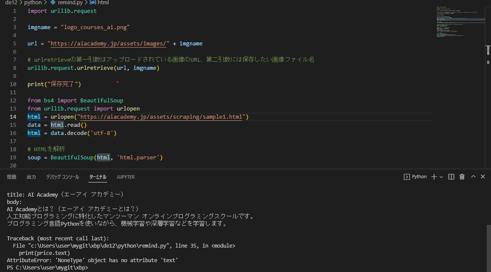

第5回課題
私たちの班は神奈川大学Ｗeb classの課題締め切りの通知が来る機能や教科ごとに課題をまとめて見やすくする機能をプログラミングを使って生み出そうと考えた。
このような機能を考えた理由
・沢山の課題が出ていて、どの課題がいつまでなのか分からなくなってしまう事がよくあるため。
・教科ごとに整理されていた方が分かりやすい、見やすいため。
・課題の期限を忘れてしまう事があるため。
→これらの機能を加えることによって課題を行いやすくなるのではないか、と考えた。
最初は順調に進んでいたのですが、途中でエラーが出てきてしまった為次に進めず完成させることが出来なかった。↓

このようにエラーが出て来てしまって次進む事が出来なくなってしまった。
考えられる原因
・まず第一に神奈川大学Web classは最初に個人のパスワードなどを入力しないとログインできない為、
・プライバシーの関係でWeb class内の機能を勝手に変えることは出来ないのではないのか、ということ。
→その理由として、URLのリンク入力の際、神奈川大学Web classのURLを入力した後にエラーが出たこと。
参考サイト↓
physonウェブ更新通知について